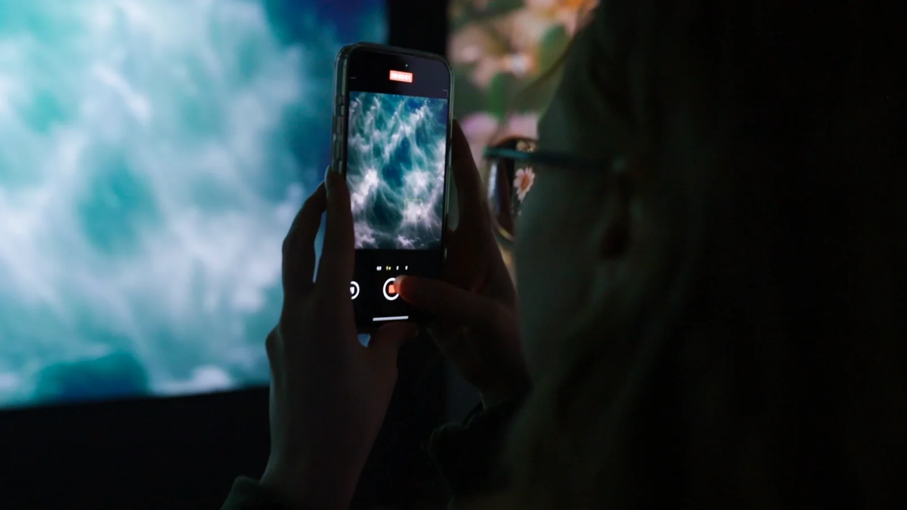
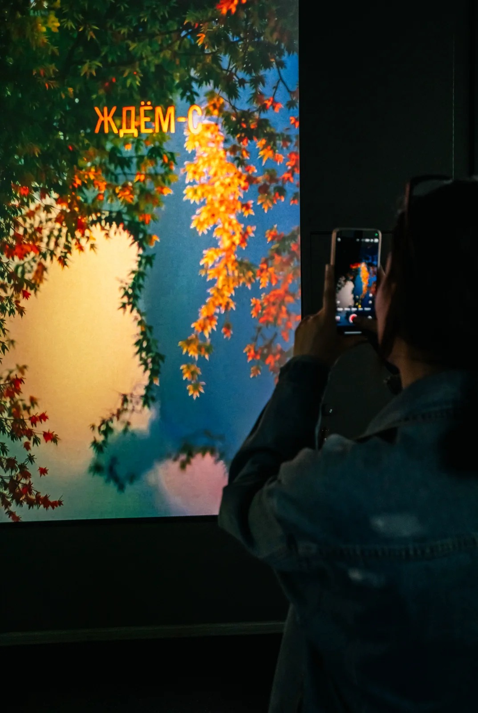
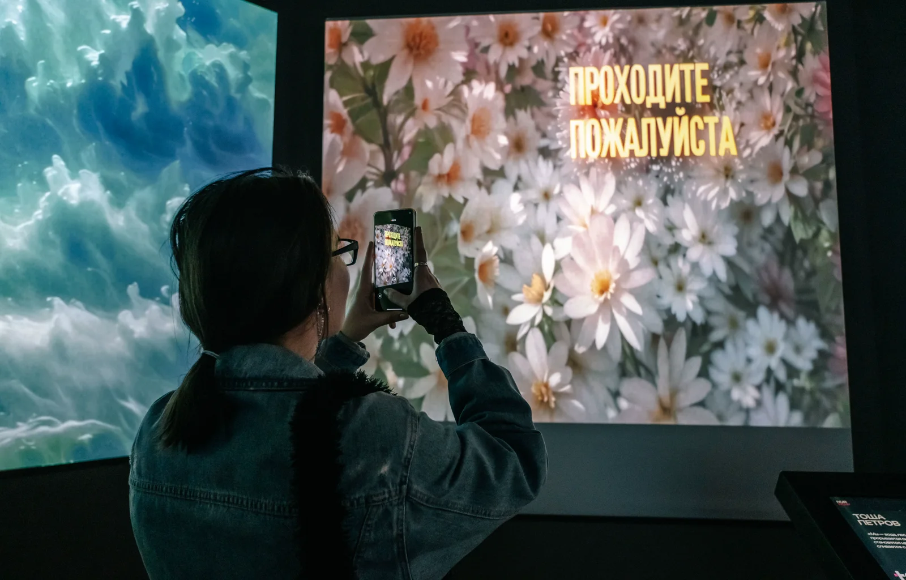

Фестиваль НУР
Казань · NUR NOW × T2 · 22–25 мая 2025
Участие в выставке в составе арт-группы «Берёзовый промпт».
Выставка NUR NOW × T2 стала совместным проектом фестиваля НУР и арт-группы «Берёзовый промпт». Работы обращались к языку, культурной идентичности и тому, как они меняются при взаимодействии с искусственным интеллектом.
Фотографии и изображения






